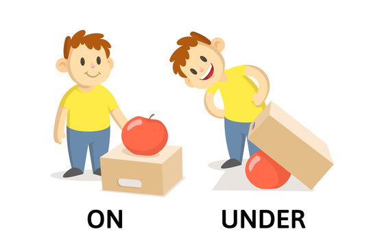
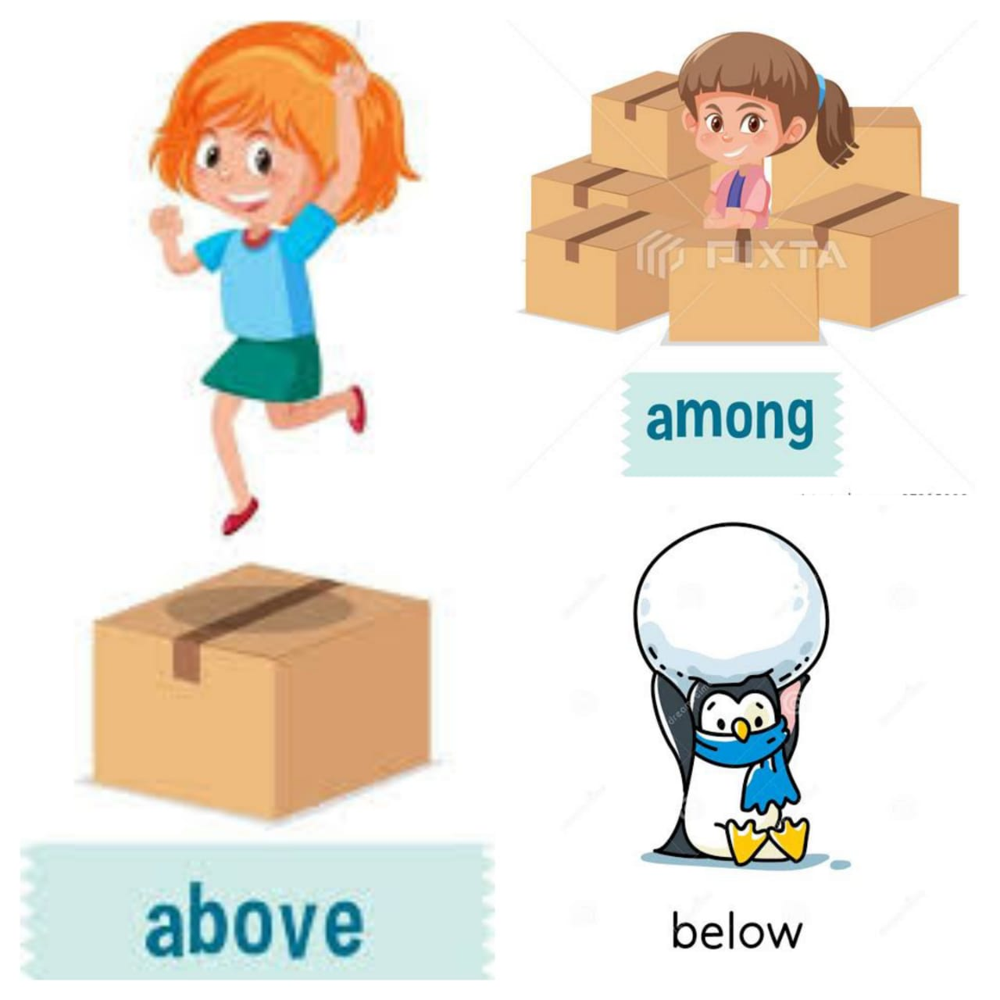
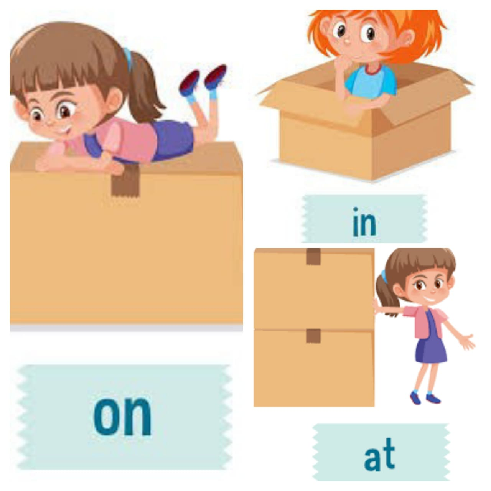
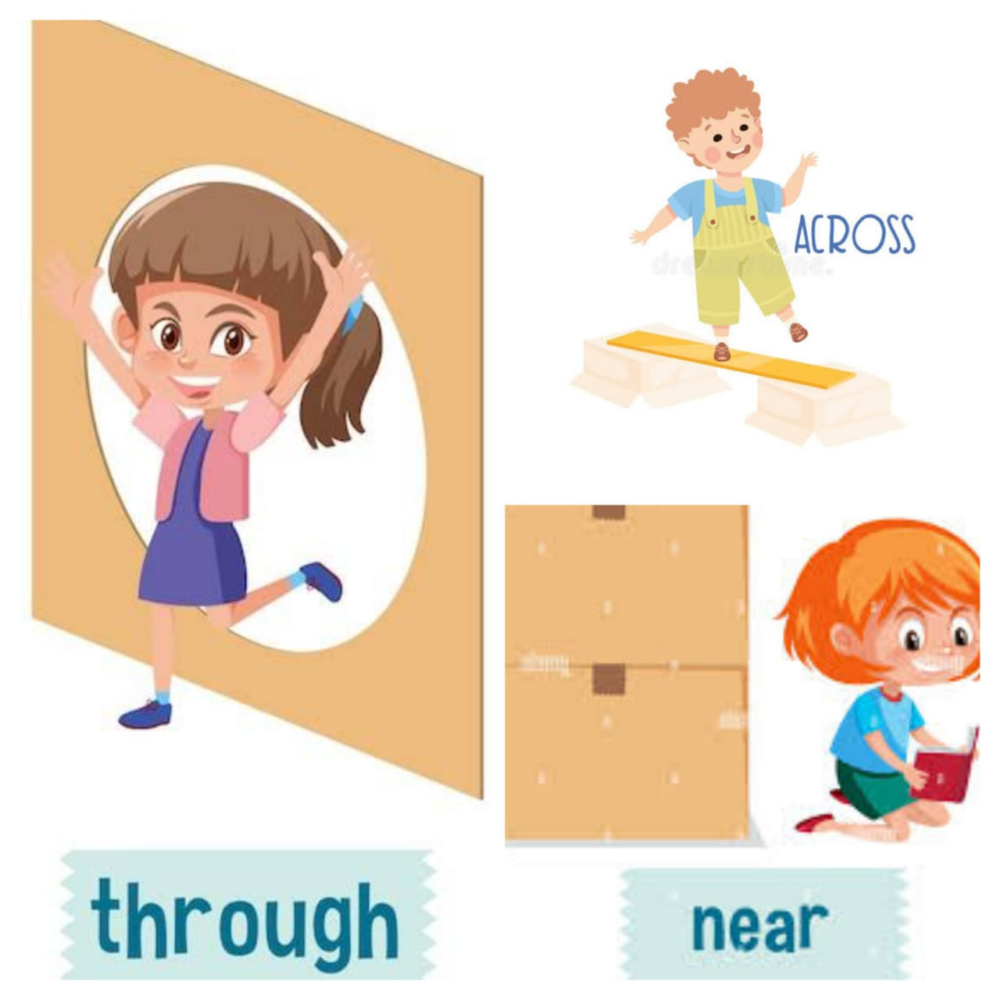
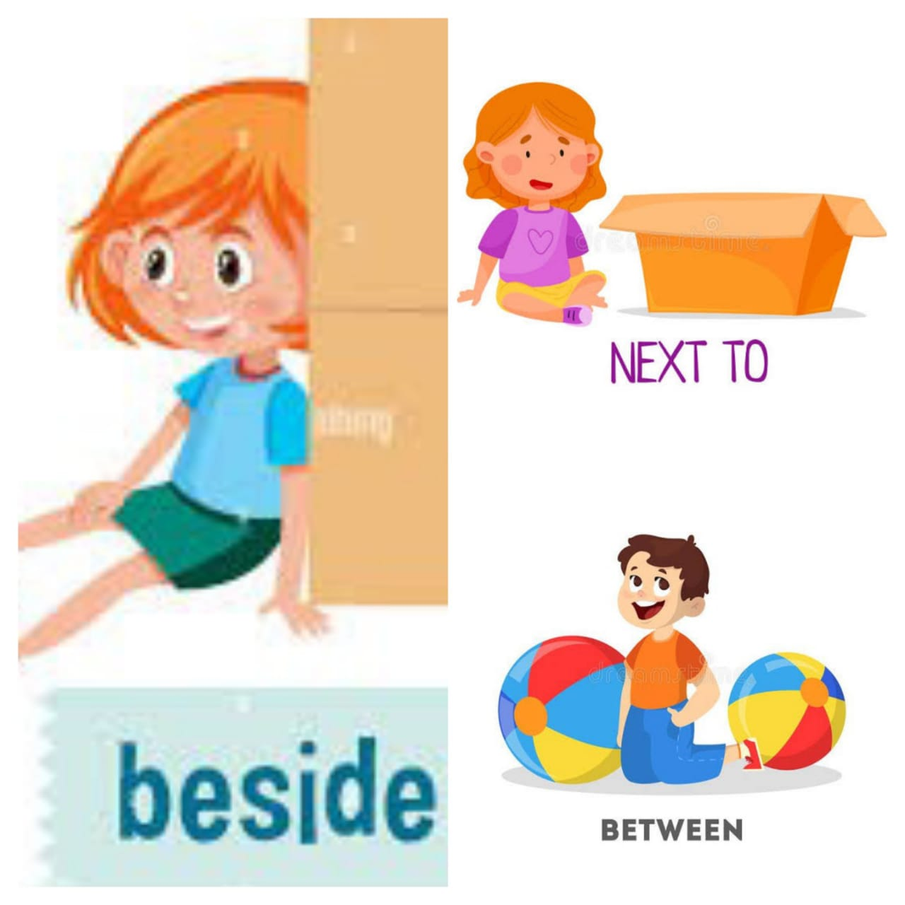

What are Preposition
Prepositions as words that show where something is, when something happens, or the relationship between things. Examples include words like "in," "on," "at," "under," and "between."
Common Preposition
List of common prepositions with examples
Preposition of Time
- in
- at
- on
- since
- for
- from...to..
- until/till
- by
Preposition of Position
- in
- on
- under
- behind
- beside
- between
- among
- above
- below
Preposition of Places
- at
- in
- on
- by
- next to
- beside
- between
- near
- across
- through
- among
Time or Date Preposition
When we Use
- Use "in" when talking about being inside something or within a certain period of time.
- Use "at" when talking about a specific location or a particular point in time.
- Use "on" when talking about being positioned on a surface or a specific day/date.
- Use "since" when talking about the starting point of a period of time.
- Use "for" when talking about the duration of time.
- Use "from...to.." when talking about a starting and ending point within a range or interval.
- Use "until/till" when talking about the endpoint of a period of time or an action.
- Use "by" when talking about a deadline or the latest time something is expected to happen.
Examples
- "At":
- will meet you at 3 p.m.
- "In":
- The party is in December.
- "On":
- We are leaving on Friday.
- "Since":
- I have been working at this company since 2015.
- "For":
- They have been traveling around Europe for three weeks.
- "Until/till":
- The store will be open until 10 p.m.
- "From...to...":
- The exhibition runs from June 1st to August 31st.
- "By":
- Please finish your homework by tomorrow evening.
Position and Place
When we use
- on: Positioned on a surface or in a certain day/date.
- in: Inside something or within a certain period of time.
- across: From one side to the other side of something.
- through: Moving from one side or end to another side or end of something.
- into: Towards the inside of something or a movement towards a specific place or condition.
- under: Below something, in a lower position.
- behind: At the back of something or someone.
- beside: Next to or at the side of something or someone.
- between: In the space separating two objects or areas.
- among: Surrounded by or in the midst of multiple things or people.
- above: Higher than something else; at a higher position.
- below: Underneath something else; at a lower position.
Examples

The apple is on top of the box
There is an apple under the box.

The girl is jumping above the floor.
The girl is hidden among the boxes.
The penguin is under the snow ball.

The girl is on the box
The girl is sitting inside the box.
The girl standing at the box.

The boy is walking across the bricks.
The girl is climbing through the hole.
The girl is standing near the cardboard boxes.

The girl is sitting beside the box.
The child is standing next to the open box.
The boy is sitting between the colorful balls.
Preposition Phrases
Examples
- Adjective Phrase:
- The book on the table is mine.
- The girl with the red dress is my sister.
- Adverb Phrase:
- She went to the store after school.
- They played soccer in the park.
- Prepositional Phrases as Objects:
- He is afraid of spiders.
- They are talking about the trip.
Important Points about Prepositions :
- Know Common Prepositions: Learn words like "in," "on," "at," and "from" that show where things are or how they relate to each other.
- Recognize Prepositional Phrases: Notice groups of words that start with a preposition and describe where something is or what it's doing.
- Think About the Situation: Pay attention to what's happening in a sentence to pick the right preposition, because it can change depending on what's going on.